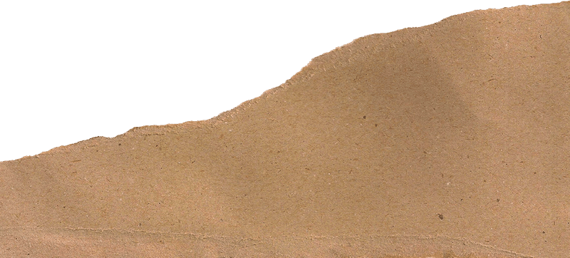
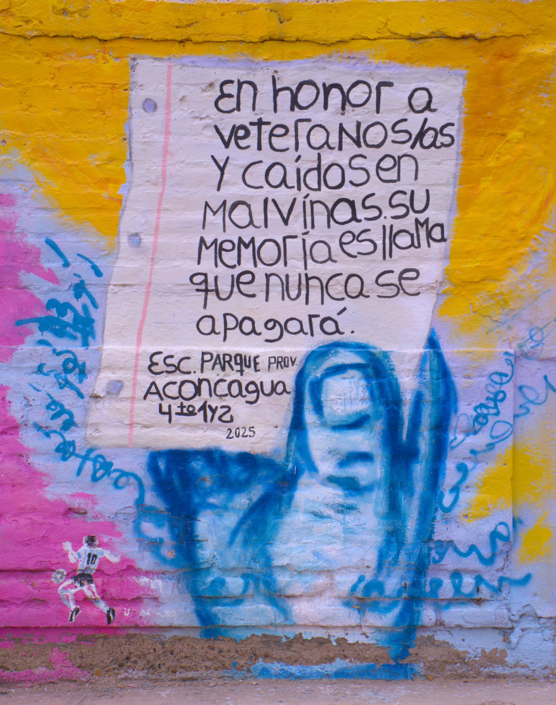
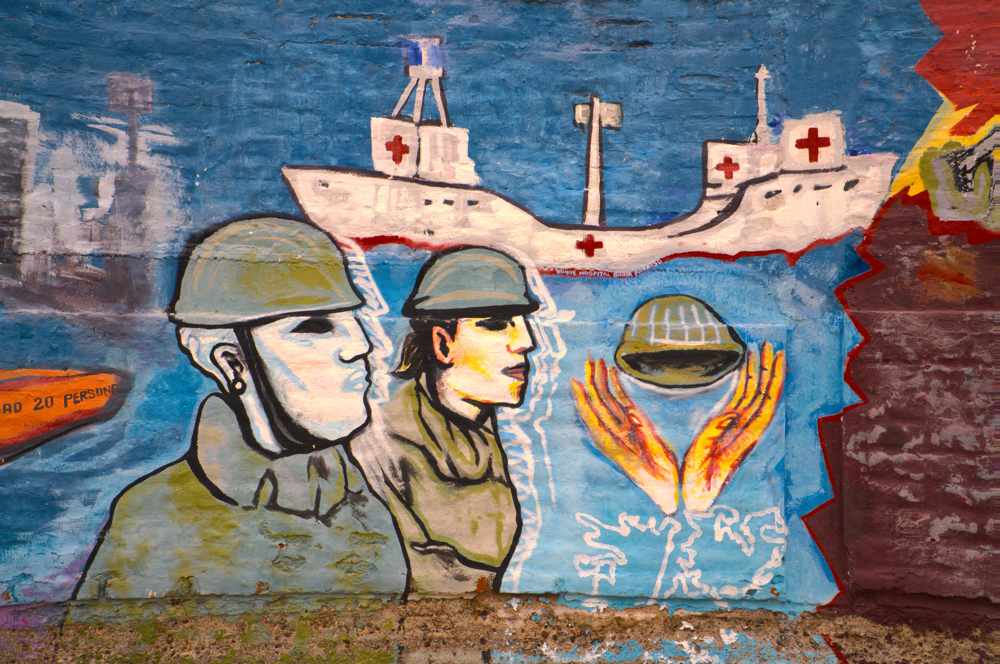
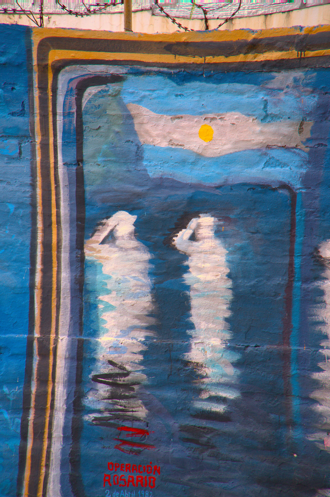
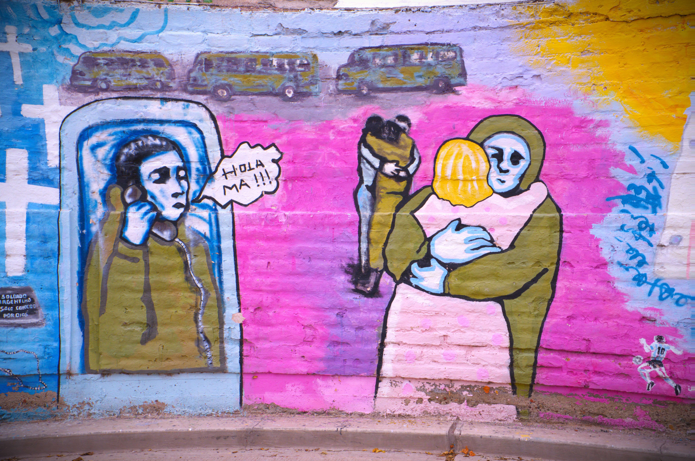
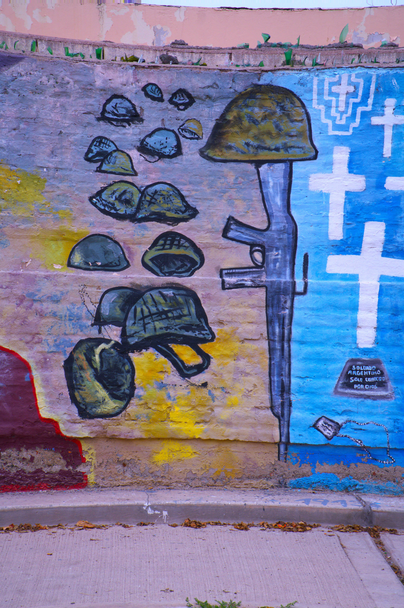

Valores para la Juventud Mendocina
Legado de Malvinas, Valores en Acción

De la Historia a Tu Realidad
¿Qué significa ser fuerte de verdad?
¿Qué harías por alguien a quien no conoces?
Esta guía no es un simple viaje al pasado; es una expedición para descubrir herramientas de vida que te servirán hoy. Aquí exploraremos los testimonios de personas de tu propia comunidad, los veteranos de Malvinas de Las Heras, para transformar su recuerdo en un faro de ética y compromiso que ilumine tu camino.
El objetivo es transformar sus historias de coraje y compañerismo en lecciones prácticas que puedas aplicar en tu día a día. Esta guía es un mapa para que, usando las lecciones de los veteranos, construyas tu propio faro ético.
Prepárate para descubrir que la historia no está solo en los libros, sino en las voces de nuestros vecinos y, pronto, en tus propias acciones.

Los testimonios de los veteranos nos enseñan un conjunto de valores fundamentales forjados en las condiciones más difíciles. Estos principios no son solo recuerdos de guerra, sino guías para construir una mejor comunidad. Se dividen en dos grandes grupos: los que nos definen como personas y los que nos comprometen como ciudadanos.
Definición: Apoyo incondicional al otro para superar juntos las adversidades.
Ejemplo hoy: Ayudar a un compañero con una materia, así como en el frío de las islas, la vida misma dependía del apoyo incondicional del otro.
Definición: Fortaleza para levantarse después de una caída, aprendiendo de la dificultad sin rendirse.
Ejemplo hoy: No desanimarse ante una mala nota, aprendiendo que, incluso después del trauma o el fracaso, es posible reconstruirse y encontrar un nuevo propósito, como lo hicieron ellos.
Definición: Actuar correctamente y cumplir con el deber por un bien mayor, incluso cuando sentimos miedo o nos cuesta un esfuerzo personal.
Ejemplo hoy: Decir la verdad aunque sea difícil o dedicar tiempo a una causa comunitaria en lugar de solo al ocio personal.
Definición: Compromiso con nuestra identidad, nuestra historia y la cultura que compartimos.
Ejemplo hoy: Conocer y cuidar los espacios públicos de nuestro departamento, como plazas y monumentos.
Definición: Cumplir con nuestras obligaciones, sabiendo que nuestras acciones contribuyen al bienestar de todos.
Ejemplo hoy: Participar activamente en los trabajos en grupo, cumpliendo con la parte asignada para no perjudicar al equipo.
Definición: Comprender nuestro pasado para no repetir errores y construir un futuro basado en la paz y el respeto.
Ejemplo hoy: Investigar y debatir sobre la historia de nuestro país con una mente abierta, buscando siempre entender diferentes perspectivas.
Ahora que conocemos el significado de estos valores, es momento de explorarlos, expresarlos y ponerlos en práctica en nuestro entorno.
Aquí comienza tu misión. El aprendizaje pasivo termina y te convertís en protagonista, transformando la memoria en acción a través de tres ejes progresivos: Analizar, Crear y Actuar.
Antes de actuar, debemos aprender a escuchar. Aquí nos convertiremos en "custodios de la memoria", tal como los veteranos son custodios de la verdad, para entender la fuerza que se esconde en sus historias. El desafío es descifrar el significado profundo de sus acciones.
Analizarán un testimonio audiovisual de un veterano. Deberán dividir el relato en momentos clave y, para cada uno, identificar el valor que se manifiesta y la emoción que lo acompaña. Luego debatirán en grupo cómo la emoción influyó en la acción y en la consolidación del valor.
Tomarán un problema actual de su comunidad o escuela (por ejemplo, el bullying, el descuido de los espacios públicos) y propondrán una solución concreta aplicando los valores de Solidaridad y Deber Cívico. Esta actividad es un contrapunto directo a la cultura del "sálvese quien pueda".
Promoverán la creación de "círculos de diálogo" en el aula para debatir temas importantes sobre la convivencia escolar. Inspirados en la disciplina y el respeto mutuo que eran vitales para la supervivencia en Malvinas, practicarán la escucha activa, la tolerancia a opiniones diferentes y la búsqueda de consensos.

Ahora es tu oportunidad para apropiarte de estos valores y darles una nueva voz. En este eje, utilizarán su creatividad para traducir las lecciones de los veteranos a los lenguajes y formatos de hoy, dejando una huella visible en su comunidad.
Usando frases impactantes o ideas extraídas de los testimonios, diseñarán una campaña de bien público para los jóvenes de Las Heras. Pueden crear afiches para la escuela o videos cortos en formato TikTok/Reel que promuevan la Resiliencia y el Coraje en la vida cotidiana.
Crearán una composición artística (un poema, la letra de una canción, un rap) que capture la esencia de un valor como el Sacrificio o la Unidad. El desafío es usar metáforas que conecten la experiencia de Malvinas (el frío, el mar) con la geografía y la identidad de Mendoza (la montaña, el sol).
En equipos, diseñarán un mural para pintar en un lugar visible de la escuela. El mural debe representar los valores del proyecto a través de símbolos que conecten la historia de los veteranos con la identidad de la comunidad de Las Heras, creando un recordatorio visual y permanente de este legado.

Este es el paso final y el más importante: llevar los valores del papel a la realidad. El objetivo final es que ustedes mismos se conviertan en agentes de cambio, generando un impacto positivo y tangible en nuestro entorno inmediato.
Organizarán una jornada de servicio comunitario en Las Heras. Puede ser la limpieza de una plaza, colaborar con un merendero local o una campaña de recolección para una causa solidaria. El objetivo es experimentar en primera persona cómo el Deber y la Solidaridad construyen una comunidad más fuerte.
Redactarán tres preguntas que le harían a un veterano. El objetivo no es preguntar qué pasó, sino cómo se sintió y qué significó. Busquen la dimensión humana detrás del hecho histórico. Por ejemplo: ¿Cómo lograron mantener el compañerismo en situaciones límite? ¿Qué significaba la bandera argentina en esos momentos de soledad?

Este encuentro culmina el ciclo de aprendizaje, pasando de la recepción de información a la síntesis y aplicación creativa. No es una simple exposición, sino un "Gran Encuentro de Retroalimentación": un espacio vivo para el diálogo, la empatía y el agradecimiento.
Presentarán sus trabajos más destacados (videos, conclusiones de los debates, diseños del mural) para demostrar cómo han interpretado, internalizado y aplicado los valores. No se trata de repetir la historia, sino de mostrar qué han construido a partir de ella.
Este será un espacio para un diálogo abierto y sincero. Es el momento de construir un puente real entre generaciones, comprendiendo la dimensión humana detrás del uniforme. Podrán hacer las preguntas que redactaron y escuchar nuevas reflexiones de primera mano.
Al compartir sus proyectos, le demostrarán a los veteranos que su sacrificio ha trascendido y que su legado tiene un impacto real en la juventud de Las Heras. Este evento sella el compromiso de transformar la memoria en una acción cívica que continúa en el tiempo.
"Los viejos amores que no están, la ilusión de los que perdieron, todas las promesas que se van… Todo está guardado en la memoria, sueño de la vida y de la historia." — León Gieco
El recuerdo de Malvinas, a través de las voces de nuestros veteranos y de las actividades de esta guía, se transforma en un faro ético que puede iluminar nuestras decisiones diarias.
Las lecciones de solidaridad, coraje y deber ya no son conceptos lejanos, sino herramientas que posees para enfrentar tus propios desafíos.
Ahora, el legado está en tus manos. Te invitamos a ser un ciudadano responsable, un compañero solidario y un protagonista activo en la construcción del futuro de tu comunidad, honrando el legado de los veteranos con cada acto de responsabilidad y solidaridad.
Ciclo Lectivo 2026
Cronograma del Proyecto
— Ciclo Lectivo 2026 —
Ciclo Lectivo 2026
Lorenz, Federico. La Guerra de Malvinas. 1982-2012. Editorial Edhasa. Buenos Aires, 2006.
Vernet, Marcelo Luis. Malvinas, Mi Casa. Vísperas, Diario de María Sáez de Vernet y Apostillas. Editorial Ministerio de Educación de la Nación. Buenos Aires, 2022.
Herrscher, Roberto. Los Viajes del Penélope. Las tres vidas de un velero legendario. De la exploración patagónica a la guerra de Malvinas. TusQuets Editores. Buenos Aires, 2022.
Fogwill. Los Pichiciegos. Editorial Alfaguara. Narrativa Argentina. Buenos Aires, 2022.
Kohen, Marcelo; Rodríguez, Facundo. Las Malvinas entre el Derecho y la Historia. Refutación al folleto británico "Más allá de la historia oficial. La verdadera historia de las Falklands/Malvinas".